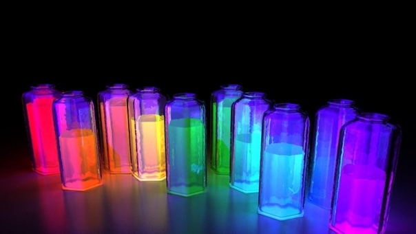

Фосфор
Фо́сфор (химический символ — P, от др.-греч. φῶς — свет и φέρω — несу, φωσφόρος — светоносный; также от лат. Phosphorus) — химический элемент 15-й группы (по устаревшей классификации — главной подгруппы пятой группы, VA) третьего периода периодической системы химических элементов Д. И. Менделеева, с атомным номером 15. Фосфор — один из распространённых элементов земной коры: его содержание составляет 0,08—0,09 % её массы.
По некоторым данным, фосфор впервые получил в 12 в. арабский алхимик Алхид Бехиль. Общепринятой датой открытия фосфора считается 1669 г., когда в результате поисков философского камня немецкий алхимик Х. Бранд при обработке упаренной мочи углём с последующей дистилляцией и конденсацией под водой выделил светящееся в темноте вещество. В 1680 г. Р. Бойль усовершенствовал процесс получения фосфора, получил оксид фосфора и ортофосфорную кислоту. Название «фосфор» происходит от греческого φωσφόρος – светоносный.
Фосфор получают восстановлением фосфоритов или апатита коксом в присутствии диоксида кремния SiO2 в электропечах при 1300–1500 °С. Образующиеся пары́ фосфора конденсируют и собирают под слоем воды. Красный фосфор получают нагреванием белого фосфора без доступа воздуха в течение нескольких часов при 375–400 °С. Очистку белого фосфора ведут отстаиванием или фильтрованием расплава, обработкой раствором KOH, H2SO4 и водой, сублимацией, перегонкой в вакууме или с водяным паром, зонной плавкой. Красный фосфор очищают обработкой водными растворами минеральных кислот, кипячением с раствором щёлочи. Фосфор высокой чистоты получают гидридным методом – термическим разложением очищенного фосфина. Мировое производство фосфоритов 219 млн т/год; в пересчёте на P2O5 67 млн т/год (2020).

Лишь в начале века белый фосфор стали использовать в производстве спичек. Такие спички легко зажигались от трения о шероховатую поверхность. Однако при горении они создавали неприятный запах, и, главное, их производство было весьма вредно для рабочих. Вдыхание паров белого фосфора приводило к тяжелейшему заболеванию — фосфорному некрозу костей.